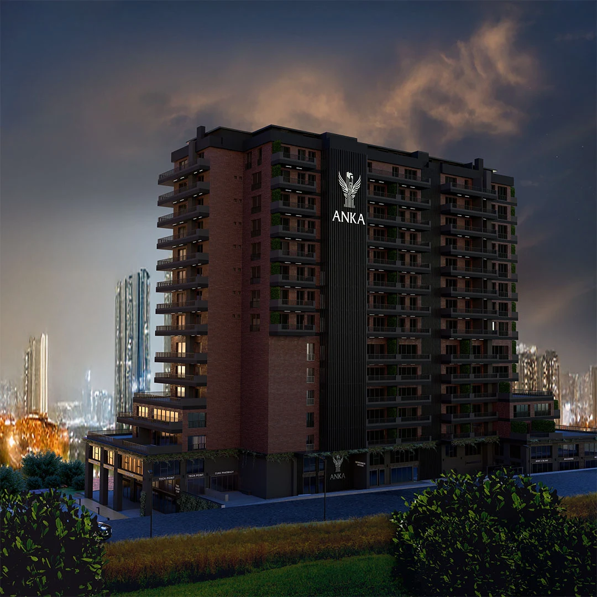

PROJECT OVERVIEW
Anka Ataşehir
A mixed-use project in Ataşehir combining homes with office and commercial spaces. The exterior gallery presents a stepped building profile, balconies and landscaped street-level areas.
Published homes101
Offices80
Commercial units14
Photo gallery

Official architectural illustrations; these images do not show the current construction condition.
EVERYDAY LIVING
Living spaces
The project presentation combines residential living with offices and commercial spaces within the same development.
LOCATION AND ACCESS
Ataşehir · Istanbul
Ataşehir, Istanbul’s Asian side. Compare the selected apartment’s outlook and the routes to your everyday destinations.
YOUR NEXT STEP
Choose your home
Request the current apartment selection, price and payment options. Compare the exact unit, view and included services before arranging your purchase.